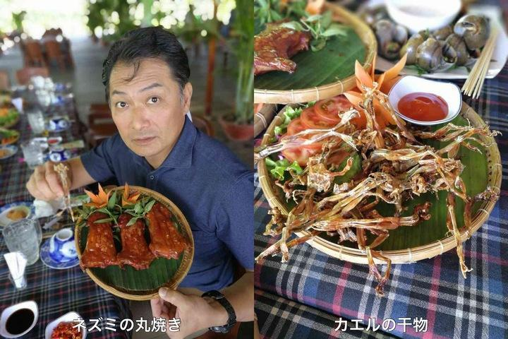

1.フーティウ サデック（Hủ tiếu Sa Đéc）

フーティウは南部の有名な料理です。地方によって異なる味付けがあります。サデックでは米粉の麺を100年以上にわたり製造していて、フーティウの麺も現地の米粉から作られます。スープは牛骨と、それぞれのお店秘伝の味付けがされています。
店名：Hủ Tiếu Bà Sẩm
住所：188 Tran Hung Dao, Ward 1, Sa Dec Town, Dong Thap
時間：7:00～22:00
価格：30,000～50,000 VND
2.蓮の葉で包まれたチャーハン（Cơm gói lá sen）

ドンタップ省の特別な名物料理です。美味しいお米を蓮の葉に包んで、蓮の種を加えて味付けした料理です。非常においしく、栄養価が高いです。
店名：Xẻo Quýtレストラン
住所：My Hiep, Cao Lanh, Dong Thap Province
時間：10:00～22:00
価格：50,000～220,000 VND
